Chapter 1 Introduction to Claims Data
1.1 국내 보건의료 빅데이터
- 보건의료 분야에서의 빅데이터 활용 동향
- 데이터 분석 기술의 발전에 따라 보건의료 분야에서도 빅데이터의 활용 부각
- 해외에서는 공공 정책 및 민간 분야 전반에서 관련 사업 대두
- 국내 역시 보건의료 빅데이터 관련 정책이 수립되면서 중요성 증가
- 보건복지부 등 8개 부처는 연간 4조원 이상의 R&D 투자 – 바이오 헬스 산업 혁신 전략 수립


등록(registry)/신고 자료
- 특정 분야에 대한 지속적인 모니터링을 위하여 별도의 등록, 신고절차를 만들어 이를 통하여 지속적이고 체계적으로 수집/관리하는 자료
- 기 수집된 의무기록을 활용하여 특정 목적에 따라 별도로 수집/관리하는 자료
- 예) 중앙암등록자료, 감염병신고자료, 퇴원손상심층조사, 국가 응급의료진료망 등
1.2 건강보험 청구자료
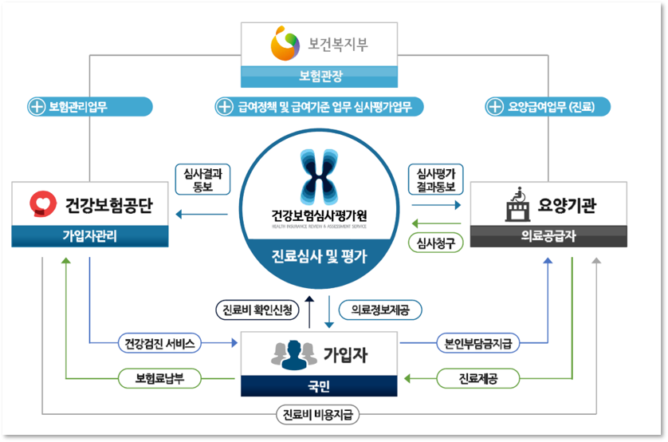
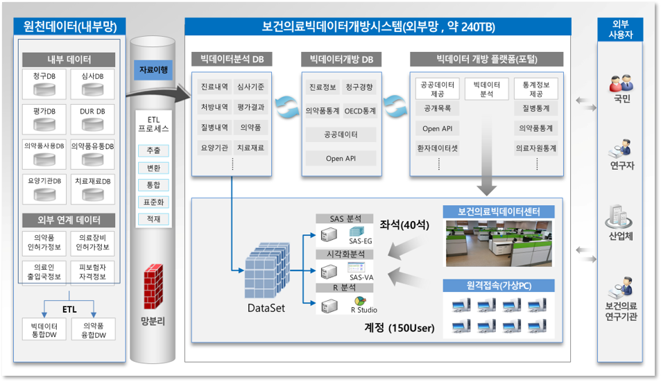
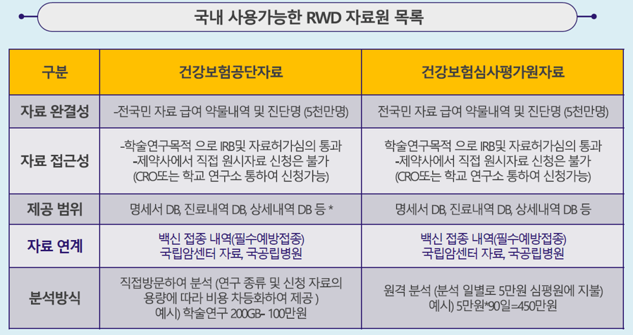
건강보험심사평가원
건강보험공단
표본코호트 자료 (2002-2015)
- 환자단위로 표본추출한 진료내역 자료
- 2006년 100만명 표본 추출한 환자의 14년간 기록
- 일반 연구자 등이 쉽게 연구에 활용할 수 있도록 제공
- 대표성에 관한 타당성 검증 -> 공식적 대외 제공
- 원격분석
1.3 청구자료 구성 요소
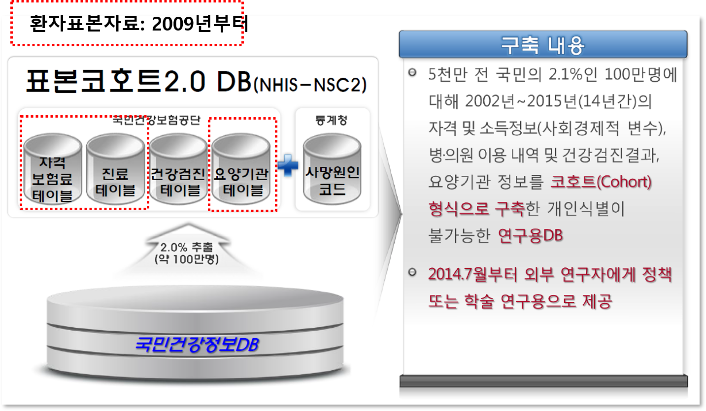
- 테이블 구성


1.4 건강보험청구자료 활용
- 건강보험심사평가원 사이트: https://opendata.hira.or.kr/

- 건강보험공단 사이트: https://nhiss.nhis.or.kr/
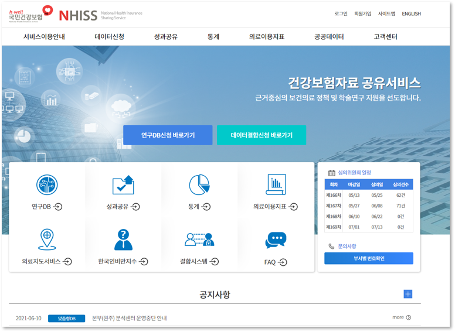
장점
- 요양기관을 방문한 환자의 비급여를 제외한 모든 의료서비스 이용 정보가 포함되어 분석결과의 일반화 가능
- 의료서비스 내역(시술/수술, 검사, 약제처방, 치료재료 등), 서비스별 급여 비용 등이 포함되어 환자가 받은 개별적인 의료서비스 확인 가능
- 환자 고유 식별자가 자료에 포함되어 환자의 추적 자료 구축 가능
이용 시 고려사항
상병 정확도
- 의료보험자료 상병기호의 정확도 추정 및 관련 특성 분석(법정전염병을 중심으로)
- 신의철 외 (1998): 10.1%
- 건강보험 질병코드의 타당도 제고방안 및 자료의 활용방안 수립
- 박병주 (2003): 악성종양 77.6%, 관상동맥질환 54.2%, 천식 41.2 %, 뇌졸중 31.4%, 간질 55.4%
- 건강보험 청구질병코드와 의무기록 일치도 평가 및 제고방안
- 박은철 (2017)
- 주상병 3자리 일치율: 82.0%
- 부상병 3자리 일치율: 56.4%
- 의료보험자료 상병기호의 정확도 추정 및 관련 특성 분석(법정전염병을 중심으로)
상병코드 뿐만 아니라 처치코드, 약물코드 등을 활용하여 질환 정의의 민감도를 높일 필요가 있음
동일 명세서 내에서의 검사, 처치, 약물처방 등의 시간적 순서를 파악할 수 없음
- 특정한 결과 발생을 예방하기 위한 시술과 특정한 결과 발생 후 치료를 목적으로 수행되는 시술이 동일한 경우, 동일한 명세서 내에서는 해당 시술이 예방적 치료인지, 발생 후 치료에 해당하는지를 구분할 수 없음
동일 입원의 명세서의 분리 청구
- 입원 기간 중 월이 달라질 경우 월별로 구분하여 청구
- 30일을 초과하여 입원진료를 하는 경우 월단위로 분리하여 청구
- 동일 입원에 대한 분석이 필요한 경우 명세서의 입원 에피소드 등의 조작적 정의 필요
오분류 비뚤림(misclassification bias)
- 포괄수가제: 세부진료내역 확인이 어려움
- 급여제한
- 산정특례
- Drug exposure misclassification: 약국의 구입 명세서보다 의료기관의 처방 내역을 활용
청구자료는 급여체계 내에서 수집되는 자료이므로, 분석대상 청구자료의 연도에 따라 의료기술을 포함하여 약물코드, 처치 코드 등의 급여기준, 급여횟수 제한 및 변경사항에 대한 확인이 필요
분석에 이용되는 자료기간 내에 수가코드, 약품코드, 치료재료 코드의 변경이 있는지 검토 필요
청구자료 분석 시 유의사항
- 상병코드의 불일치 및 병기파악 불가로 인해 환자 선정에 대한 명확한 조작적 정의 필요
- 임상적 자료의 부재
- 기입 오류로 인한 자료의 한계 파악
- 심결비용 부재, 상병코드 부재, 투약 정보 부재 등
- 명확한 end point 정의 불가능
건강보험청구자료 활용
- 명세서 기반의 분석
- 질병이나 의료이용, 의약품 사용 현황을 파악하기 위해 수행
- 관심있는 질병으로 인한 연도별 의료이용 현황
- 연도별 특정 의약품의 사용현황 등을 단면적으로 파악
- 질병이나 의료이용, 의약품 사용 현황을 파악하기 위해 수행
- 환자 기반의 분석
- 명세서를 이용한 환자 기준의 데이터를 구축 후, 질병의 발생률, 유병률 등을 산출
- 실제 인구집단에서 이루어지는 일상 진료환경에서 노출 또는 치료의 성과를 평가하는 성과연구 수행
- 성과의 인과성을 설명하기 위해 코호트 연구 또는 환자-대조군 연구 등의 연구설계 필요
- 관찰연구에서 발생하는 교란요인들을 보정하기 위한 적절한 통계분석 방법 적용 필요
1.4.2 활용 예시 - 환자 기반
Example 1
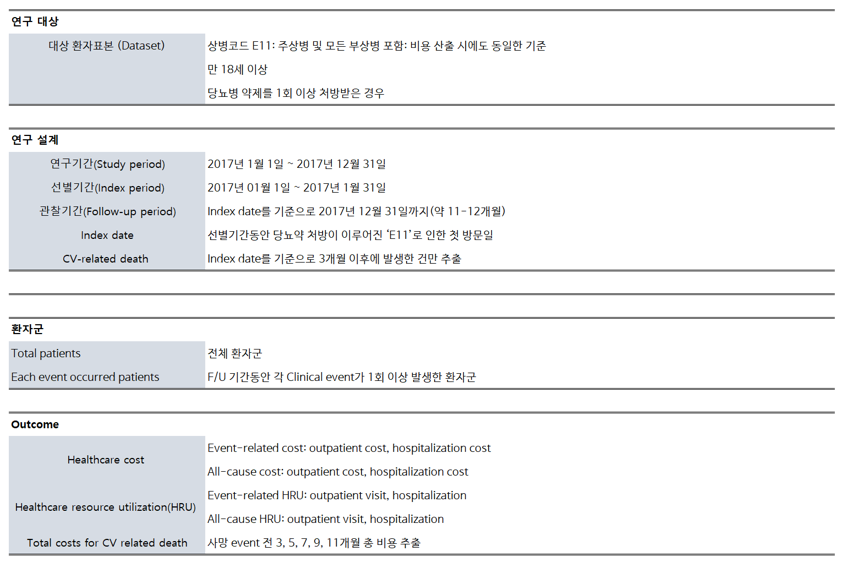
- Clinical event
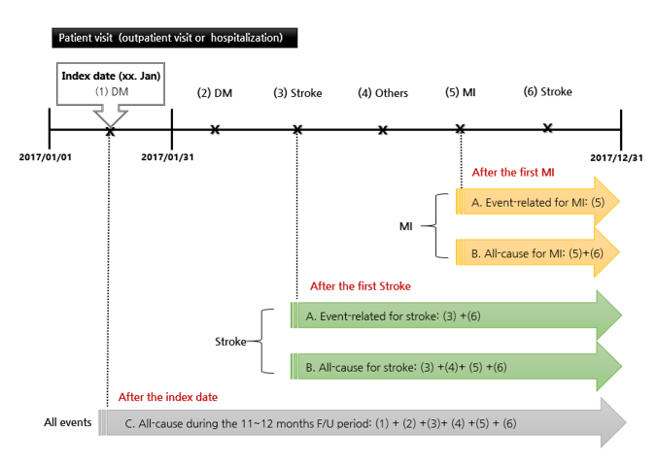
- Patient characteristics
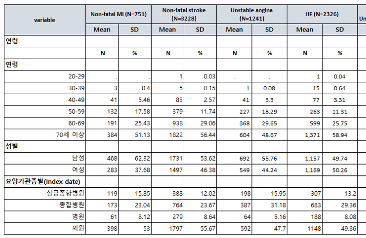
- Healthcare resource utilization
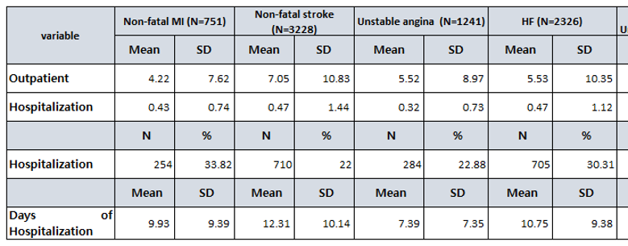
- Medical Cost
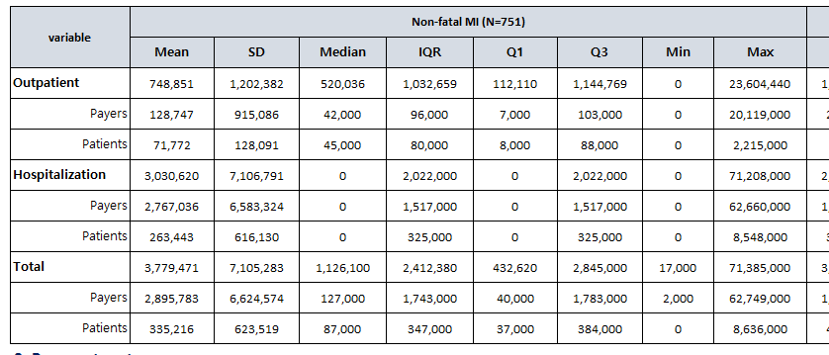
Example 2
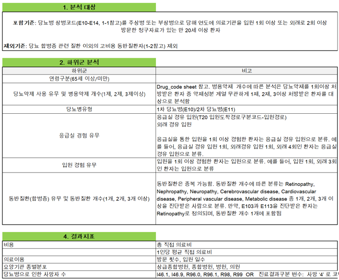
- Flow chart
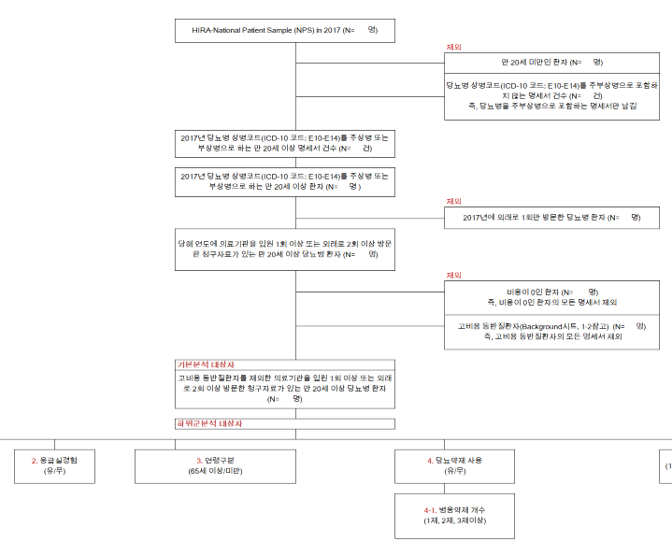
- Baseline characteristics
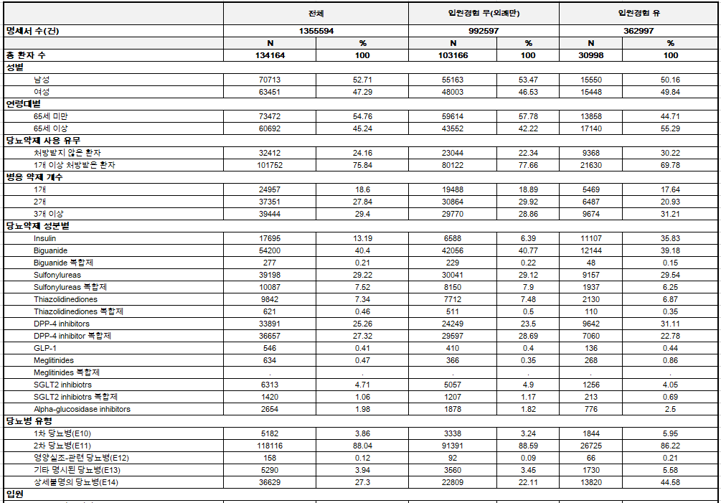
- Medical cost
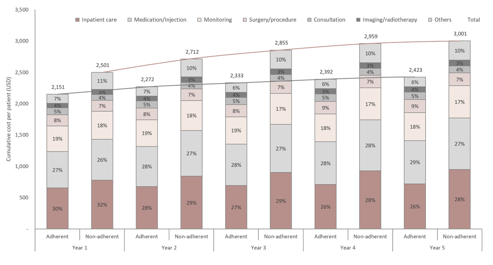
- Treatment pattern
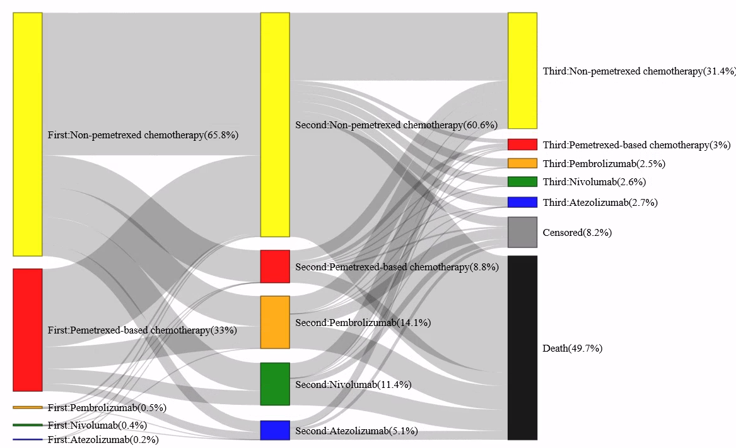
Example 3
- Economic burden of subsequent fracture in osteoporosis patients in South Korea
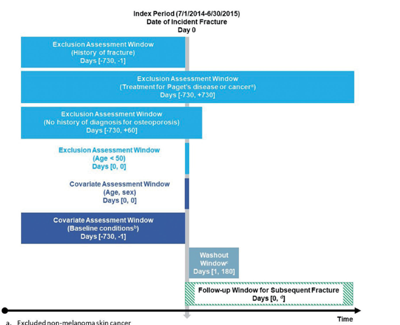
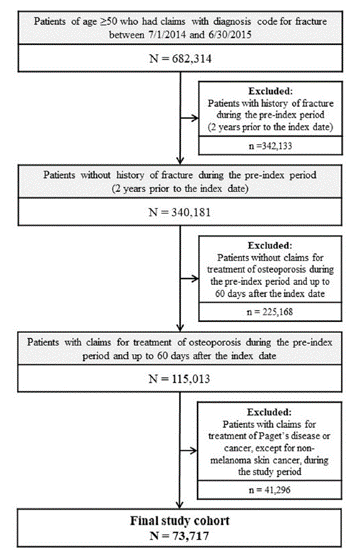
- GLM results
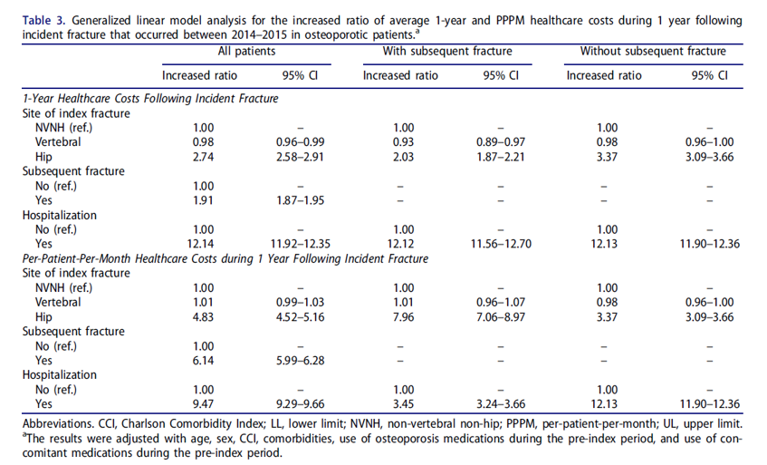
환자대조군 연구(case-control study)
- 관심 질병을 가진 환자군 선정
- 환자군과 비교성이 있는 대조군 선정
- 두 집단에 속한 연구대상자의 과거 관심 약물노출 경험 비교분석
- 관심 약물노출과 관심 질병 간의 관련성 파악(위험요인 여부 규명)
- 각 군에서의 노출 대응비를 활용하여 지표 산출
- 지표: Odds ratio = (A/C)/(B/D)
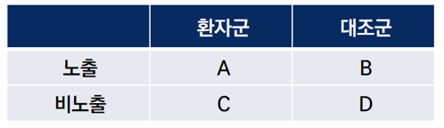
- Zolpidem use and suicide death in South Korea: A population-based case-control study
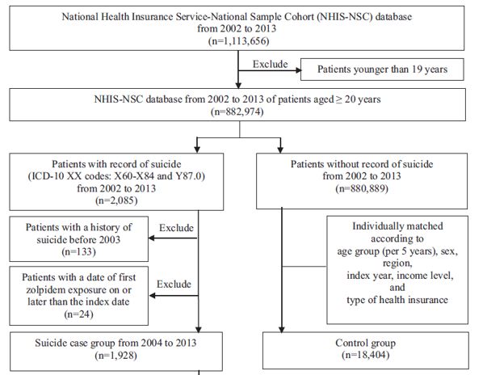
- Demographics
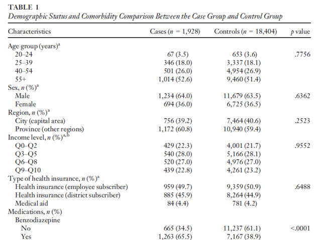
- Results

코호트 연구(cohort study)
- 관심 약물, 이상반응 모두 경험하지 않은 연구대상자 선정
- 이후 약물노출 기록 확인하여 약물복용군, 약물비복용군으로 나누어 추적관찰
- 각 군에서의 산출된 이상반응 발생률을 활용하여 약물-이상반응 간의 인과성 평가
- 각 군에서의 이상반응 발생률의 비를 활용하여 지표 산출
- 지표: Relative Risk =(A/T1)/(B/T2)
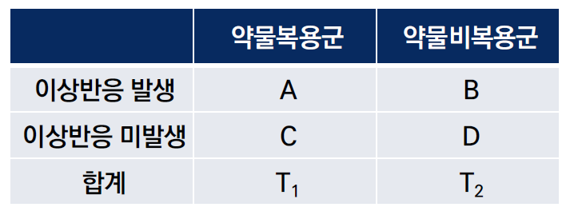
- Beyond uncertainty: Negative findings for the association between the use of proton pump inhibitors and risk of dementia
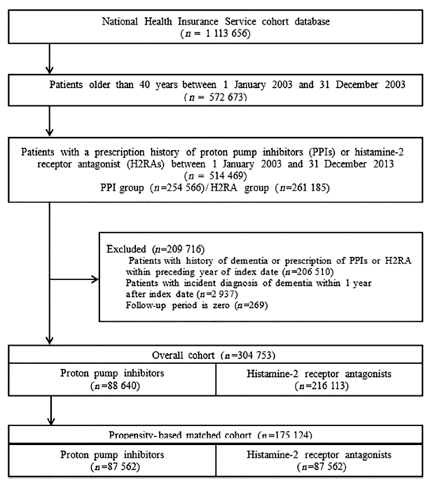
- Baseline characteristics
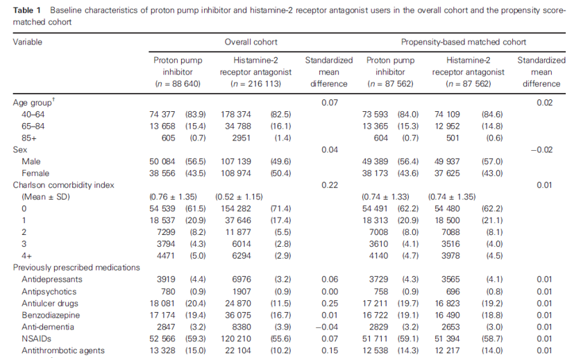
- Poisson GLM (incident rate ratio)
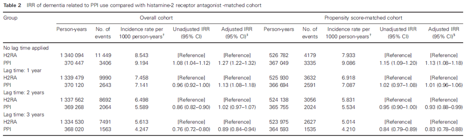
- Incidence and risk factors of subsequent osteoporotic fracture: a nationwide cohort study in South Korea
- CIF with competing risk
실제 활용사례
- Real-World Data (RWD)를 이용한 시판 후 사용성적 조사나 적응증 확대의 국내외 동향
- 실사용데이터/실사용근거를 활용한 FDA와 EMA의 규제적 의사결정 사례 분석, 성희진 외(2020)
- 실제임상자료(Real World Data, RWD)를 활용한 허가심사체계 기반 마련 연구(2019, 성균관대학교)
- RWD 국외 활용사례
- 가다실9 주(인유두종바이러스 9가 백신, 유잔자재조합)
- 바벤시오 주(아벨루맙)
- 잘목시스 주(유전자 변형 T 세포)
- 솔라리스 주(에쿨리주맙)
- 블린사이토 주(블리나투모맙)
- 프라닥사 캡슐(다비가트란 에텍실레이트메실산염)
- 인베가 서스티나 주(팔리페리돈 팔미테이트)